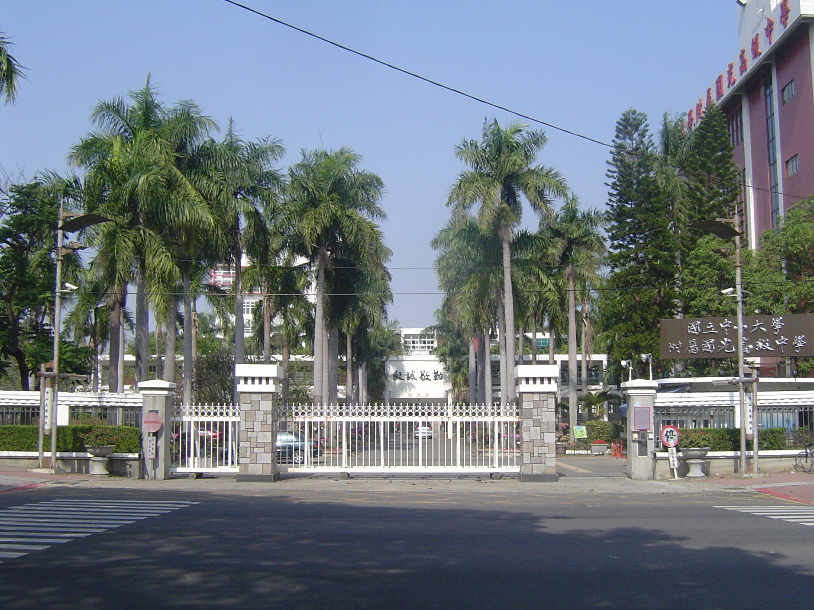
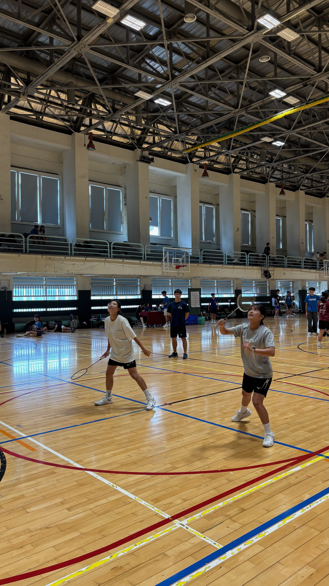
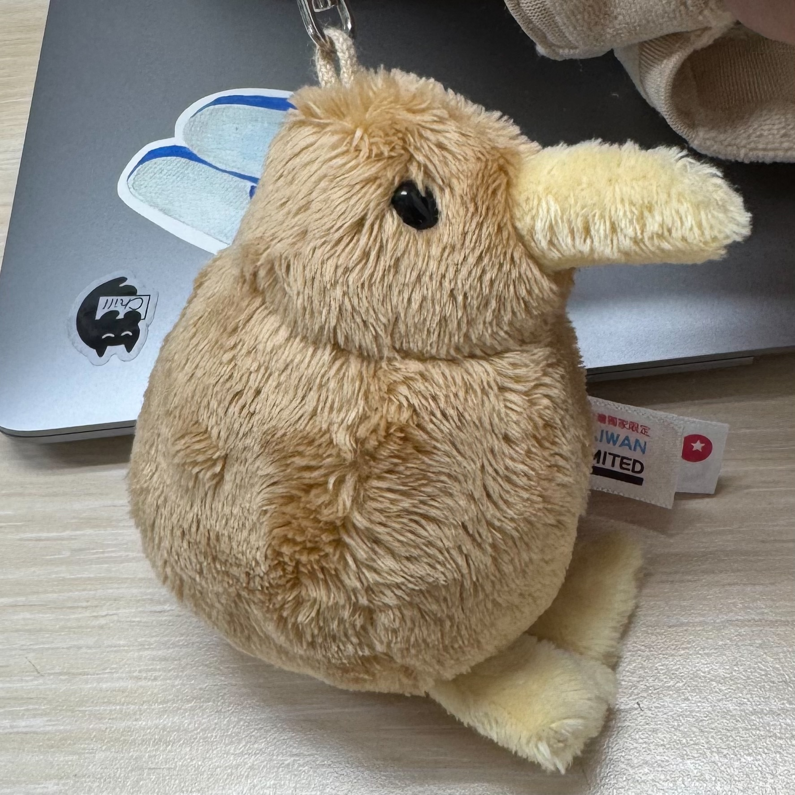
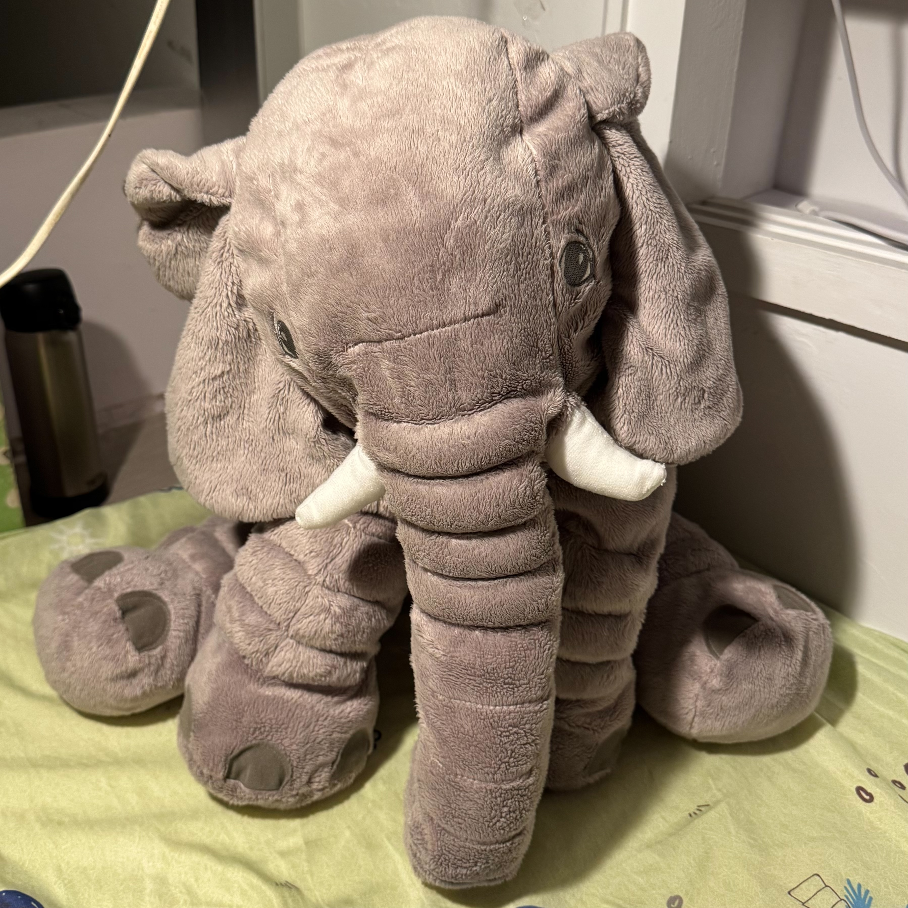
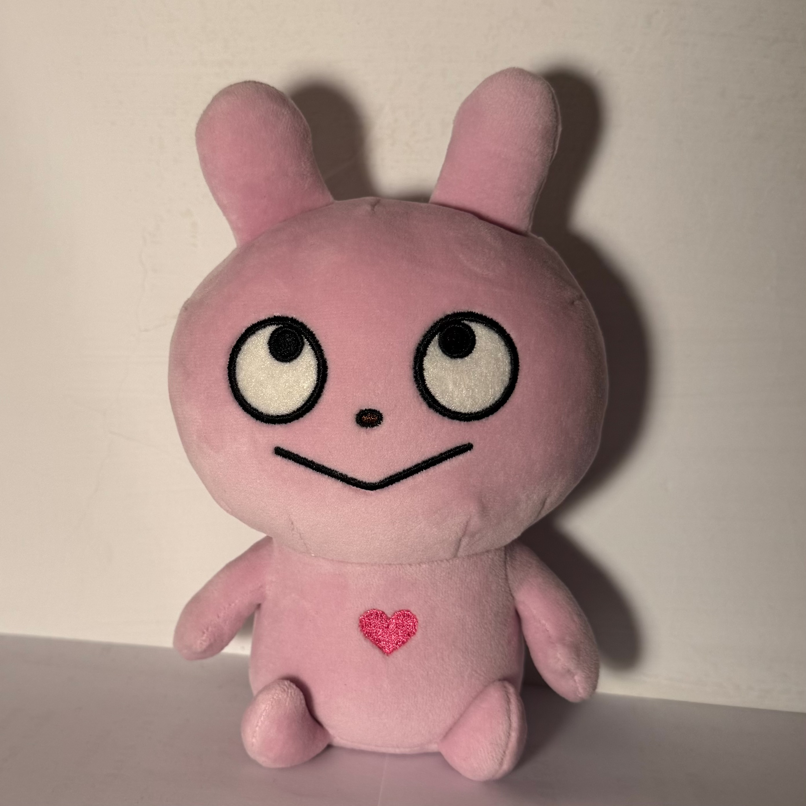
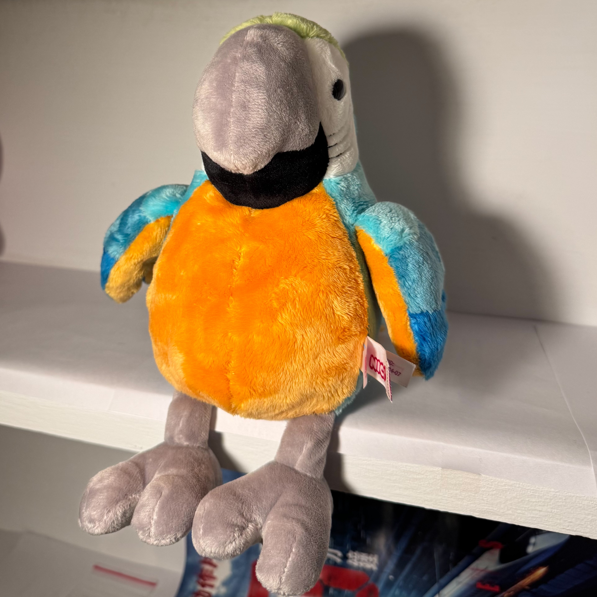

關於我
在此部落格中，將分享我在學習上及生活中的點滴
 |
曾薆國北教大學生 |
我是一位國北教大資科系二年級的學生，也是系女排的球員，打副攻位
平常的興趣是看電影、吃美食還有散步及拍漂亮風景
在此部落格中，將分享我在學習上及生活中的點滴
|
曾薆國北教大學生 |
我是一位國北教大資科系二年級的學生，也是系女排的球員，打副攻位
平常的興趣是看電影、吃美食還有散步及拍漂亮風景
| 2024 | 國立台北教育大學資訊科學系 | |
| 2021 | 高雄市立高雄女子高級中學 | |
| 2018 | 國立中山大學附屬國光高級中學 |  |
 |
 |
 |
 |
 |
 |
 |
| 程式語言 | 等級 |
|---|---|
| Java | 🌕🌕🌗 |
| C++ | 🌕🌕🌕🌕🌗 |
| Python | 🌕🌕🌘 |
| 運動項目 | 等級 | 比賽 |
|---|---|---|
| 跑步 | 🌕🌕🌕🌕🌖 | 國民小學運動會、校慶運動會100公尺單項、4*100大隊接力 |
| 排球 | 🌕🌕🌕🌖 | 國北排盟比賽、校長盃、飲料盃 |
| 羽球 | 🌕🌕🌗 | 校長盃 |

|  |  |
|---|---|
|  |  |